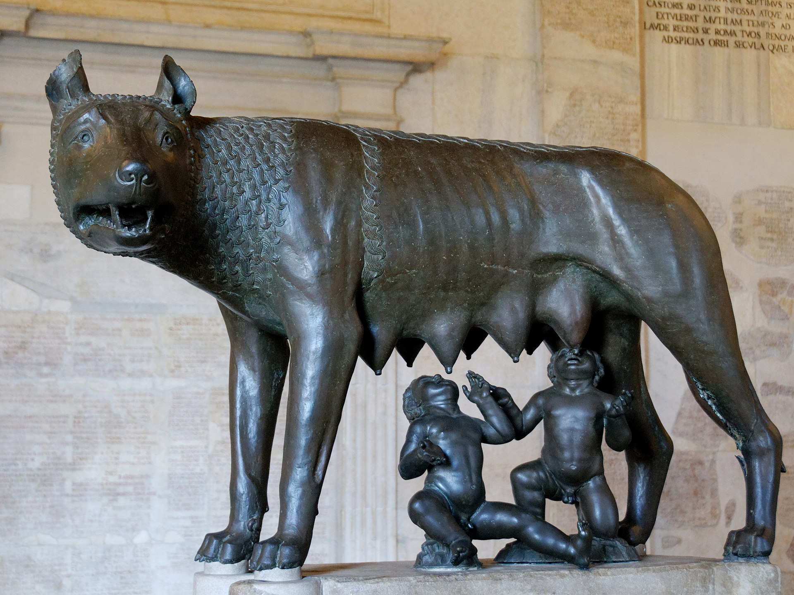
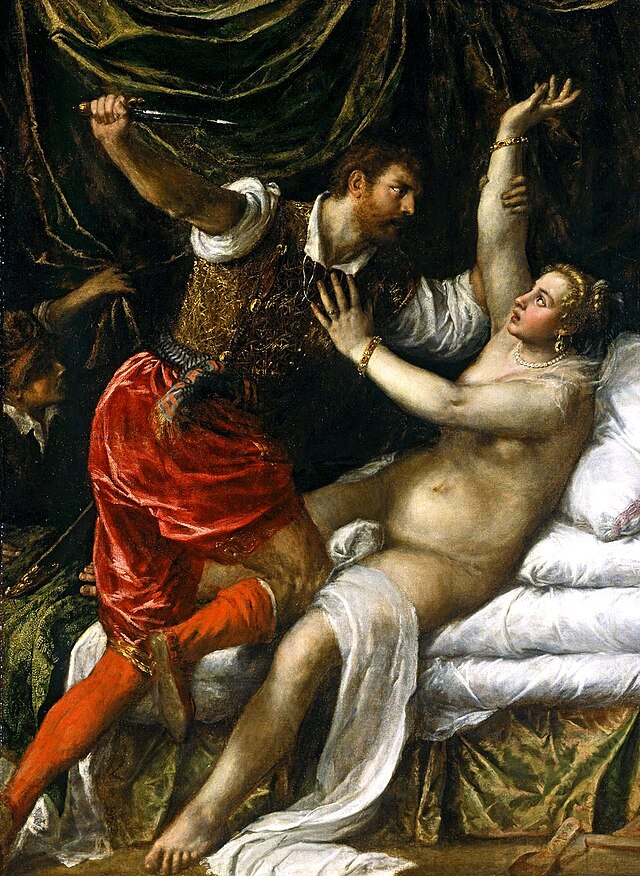
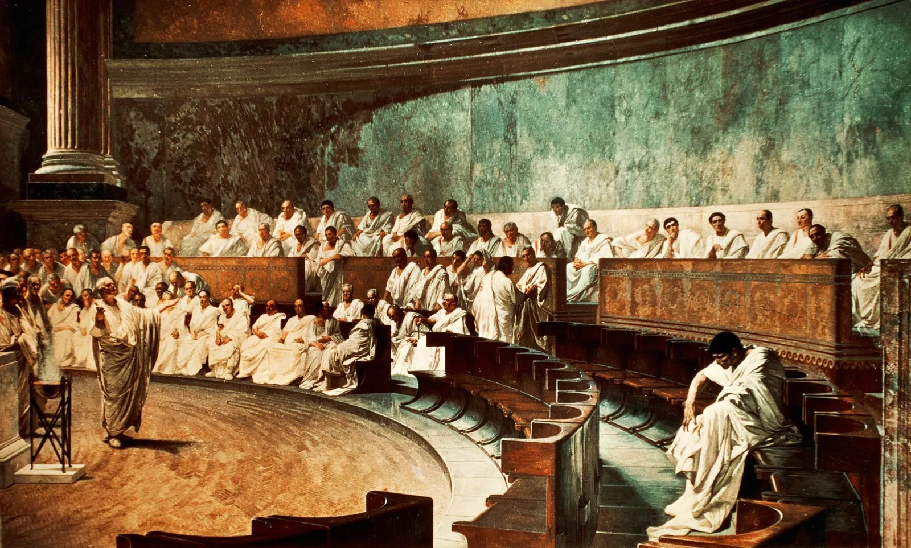
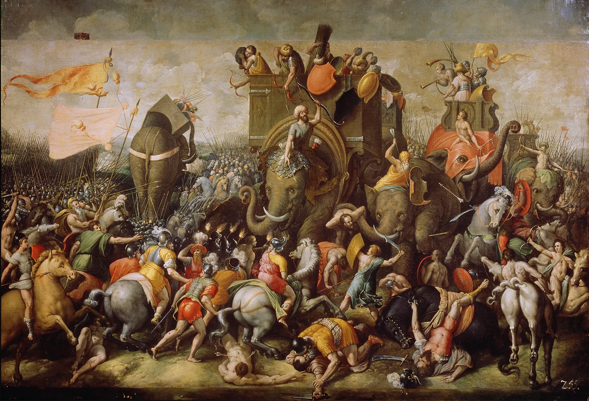
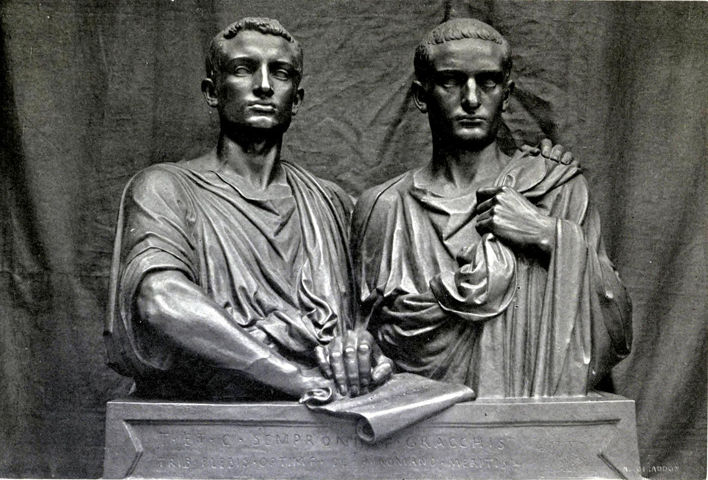
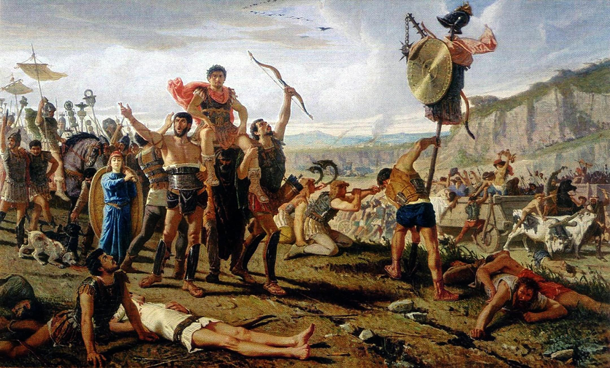
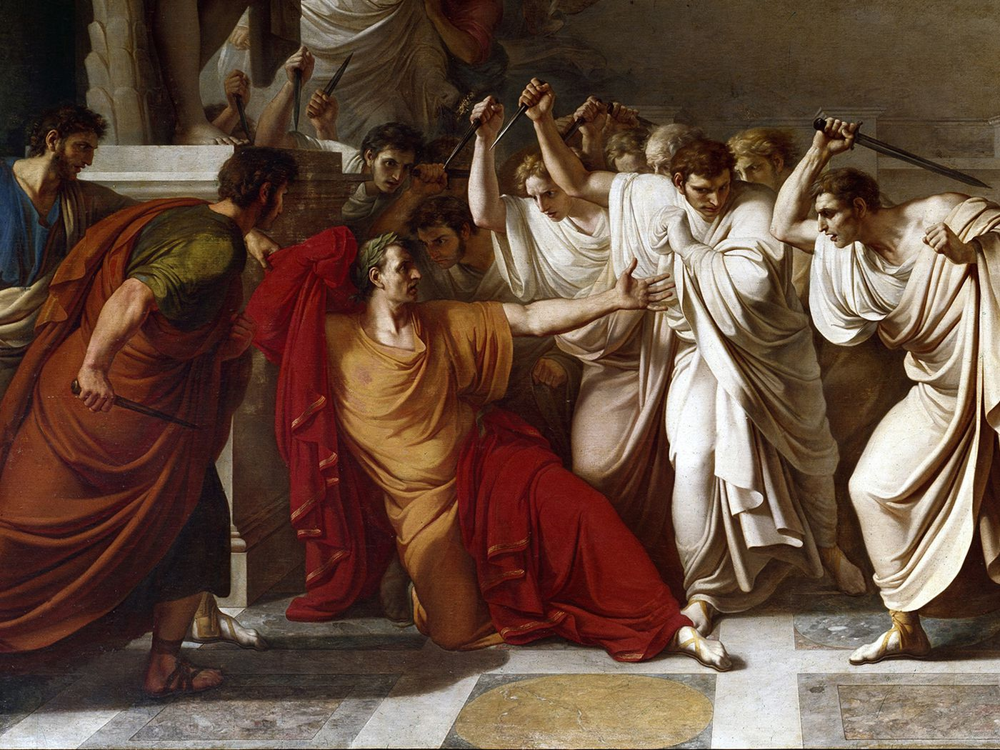
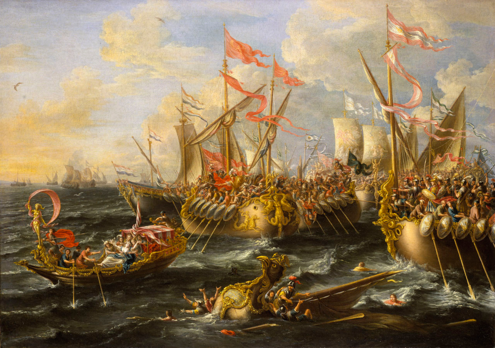
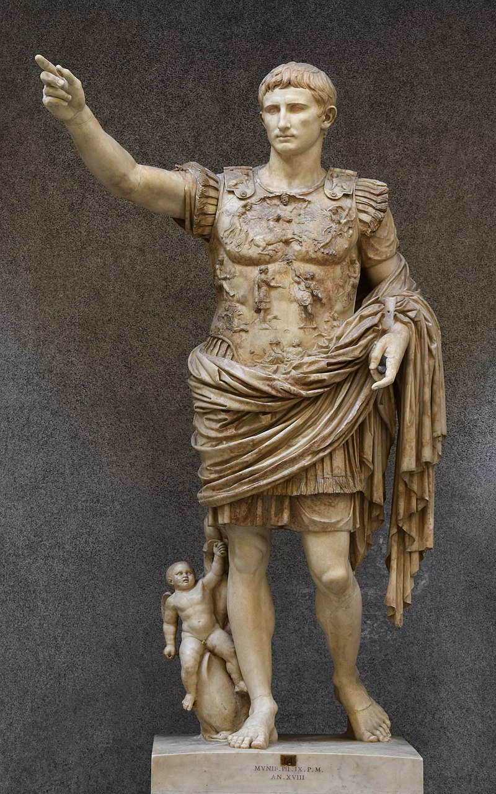

Ancient Rome
When you finish reading, test your knowledge and take the quiz!
Summary
In modern historiography, ancient Rome refers to Roman civilisation from the founding of the Italian city of Rome in the 8th century BC to the collapse of the Western Roman Empire in the 5th century AD. It encompasses the Roman Kingdom (753–509 BC), Roman Republic (509–27 BC), and Roman Empire (27 BC–476 AD) until the fall of the western empire. Ancient Rome began as an Italic settlement, traditionally dated to 753 BC, beside the River Tiber in the Italian Peninsula. The settlement grew into the city and polity of Rome, and came to control its neighbours through a combination of treaties and military strength. It eventually dominated the Italian Peninsula, assimilated the Greek culture of southern Italy (Magna Grecia) and the Etruscan culture and acquired an Empire that took in much of Europe and the lands and peoples surrounding the Mediterranean Sea. It was among the largest empires in the ancient world, with an estimated 50 to 90 million inhabitants, roughly 20% of the world's population at the time. It covered around 5 million square kilometres (1.9 million square miles) at its height in AD 117.
The Roman state evolved from an elective monarchy to a democratic classical republic and then to an increasingly autocratic semi-elective military dictatorship during the Empire. Through conquest, cultural, and linguistic assimilation, at its height it controlled the North African coast, Egypt, Southern Europe, and most of Western Europe, the Balkans, Crimea, and much of the Middle East, including Anatolia, Levant, and parts of Mesopotamia and Arabia. It is often grouped into classical antiquity together with ancient Greece, and their similar cultures and societies are known as the Greco-Roman world. Ancient Roman civilisation has contributed to modern language, religion, society, technology, law, politics, government, warfare, art, literature, architecture, and engineering. Rome professionalised and expanded its military and created a system of government called res publica, the inspiration for modern republics such as the United States and France. It achieved impressive technological and architectural feats, such as the empire-wide construction of aqueducts and roads, as well as more grandiose monuments and facilities.
Founding of Rome
Archaeological evidence of settlement around Rome starts to emerge c. 1000 BC. Agriculture in Italy had been prospering and settlements were beginning to develop, leading to the creation of city-states. The Romans themselves had a founding myth, in the mythical city of Alba Longa. When the king was overthrown, one of the princesses had to become a vestal virgin. She was raped and impregnated by the god Mars and she bore twin sons, Romulus and Remus. They were sentenced to death by King Amulius but were left in a basket floating down the River Tiber by a servant. They were rescued by a she-wolf, breastfed, and eventually raised by her. The three were discovered by a shepherd and grew up to be strong and intelligent leaders. They returned to Rome and discovered their lineage. They killed King Amulius and restored their grandfather as king. The twins set out to build their new city but could not decide what land to build on. After a dispute, Romulus killed Remus and became the sole founder of Rome in 753 BC.
Another legend, recorded by Greek historian Dionysius of Halicarnassus, says that Prince Aeneas led a group of Trojans on a sea voyage to found a new Troy after the Trojan War. They landed on the banks of the Tiber River and a woman travelling with them, Roma, torched their ships to prevent them leaving again. They named the settlement after her The Roman poet Virgil recounted this legend in his classical epic poem the Aeneid, where the Trojan prince Aeneas is destined by the gods to found a new Troy.
The Kingdom
In the earliest part of Roman history, the city and its territory were ruled by kings. The Roman Kingdom began from its founding and there were seven legendary kings who each had a major contribution to Rome. The first king Romulus founded Rome and established the Senate and the armies. The second king, Numa Pompilius established religious institutions and built many temples in Rome. The last king was Lucius Tarquinius Superbus who was deposed, as the Roman monarchy was overthrown and the Roman Republic was established. The king’s second son, Sextus Tarquinius had raped a noblewoman, Lucretia who revealed this assault to Roman noblemen and then killed herself. Led by Lucius Junius Brutus, the noblemen gathered the support of the people to expel the king and his family. With the support of the Roman army behind Brutus, the king was forced into exile. The Roman people thereafter despised kings and any abuse of absolute power or corruption. Evidence of Roman expansion is clear in the sixth century BC; by its end, Rome controlled a territory of some 780 square kilometres (300 square miles) with a population perhaps as high as 35,000. A palace, the Regia, was constructed c. 625 BC; the Romans attributed the creation of their first popular organisations and the Senate to the regal period as well. Rome also started to extend its control over its Latin neighbours. By the end of the 6th century, most of this area had become dominated by the Romans.
The Republic
By the end of the sixth century, Rome and many of its Italian neighbours entered a period of turbulence. Archaeological evidence implies some degree of large-scale warfare. According to tradition and later writers such as Livy, the Roman Republic was established c. 509 BC, when the last of the seven kings of Rome, Tarquin the Proud, was deposed and a system based on annually elected magistrates and various representative assemblies was established. A constitution set a series of checks and balances, and a separation of powers. The most important magistrates were the two consuls, who together exercised executive authority such as imperium, or military command. The consuls had to work with the Senate, which was initially an advisory council of the ranking nobility, or patricians, but grew in size and power. Other magistrates of the Republic include tribunes, quaestors, aediles, praetors and censors. The magistracies were originally restricted to patricians, but were later opened to common people, or plebeians. Republican voting assemblies included the comitia centuriata (centuriate assembly), which voted on matters of war and peace and elected men to the most important offices, and the comitia tributa (tribal assembly), which elected less important offices.
In the 4th century BC, Rome had come under attack by the Gauls, who now extended their power in the Italian peninsula beyond the Po Valley and through Etruria. On 16 July 390 BC, a Gallic army under the leadership of tribal chieftain Brennus, defeated the Romans at the Battle of the Allia and marched to Rome. The Gauls looted and burned the city, then laid siege to the Capitoline Hill, where some Romans had barricaded themselves, for seven months. The Gauls then agreed to give the Romans peace in exchange for 1000 pounds of gold. According to later legend, the Roman supervising the weighing noticed that the Gauls were using false scales. The Romans then took up arms and defeated the Gauls. Their victorious general Camillus remarked "With iron, not with gold, Rome buys her freedom." The Romans gradually subdued the other peoples on the Italian peninsula, including the Etruscans. The last threat to Roman hegemony in Italy came when Tarentum, a major Greek colony, enlisted the aid of Pyrrhus of Epirus in 281 BC, but this effort failed as well. The Romans secured their conquests by founding Roman colonies in strategic areas, thereby establishing stable control over the region.
The Punic Wars
In the 3rd century BC Rome faced a new and formidable opponent: Carthage, the other major power in the Western Mediterranean. The First Punic War began in 264 BC, when the city of Messana asked for Carthage's help in their conflicts with Hiero II of Syracuse. After the Carthaginian intercession, Messana asked Rome to expel the Carthaginians. Rome entered this war because Syracuse and Messana were too close to the newly conquered Greek cities of Southern Italy and Carthage was now able to make an offensive through Roman territory; along with this, Rome could extend its domain over Sicily. Carthage was a maritime power, and the Roman lack of ships and naval experience made the path to the victory a long and difficult one for the Roman Republic. Despite this, after more than 20 years of war, Rome defeated Carthage and a peace treaty was signed. Among the reasons for the Second Punic War was the subsequent war reparations Carthage acquiesced to at the end of the First Punic War.
The war began with the audacious invasion of Hispania by Hannibal, who marched through Hispania to the Italian Alps, causing panic among Rome's Italian allies. The best way found to defeat Hannibal's purpose of causing the Italians to abandon Rome was to delay the Carthaginians with a guerrilla war of attrition, a strategy propounded by Quintus Fabius Maximus Verrucosus. Hannibal's invasion lasted over 16 years, ravaging Italy, but ultimately Carthage was defeated in the decisive Battle of Zama in October 202 BC. More than a half century after these events, Carthage was humiliated and the Republic's focus now was only to the Hellenistic kingdoms of Greece and revolts in Hispania. However, Carthage, after having paid the war indemnity, felt that its commitments and submission to Rome had ceased, a vision not shared by the Roman Senate. The Third Punic War began when Rome declared war against Carthage in 149 BC. Carthage resisted well at the first strike but could not withstand the attack of Scipio Aemilianus, who entirely destroyed the city, enslaved all the citizens and gained control of that region, which became the province of Africa. All these wars resulted in Rome's first overseas conquests (Sicily, Hispania and Africa) and the rise of Rome as a significant imperial power.
The Late Republic
After defeating the Macedonian and Seleucid Empires in the 2nd century BC, the Romans became the dominant people of the Mediterranean Sea. The conquest of the Hellenistic kingdoms brought the Roman and Greek cultures in closer contact and the Roman elite, once rural, became cosmopolitan. At this time Rome was a consolidated empire—in the military view—and had no major enemies. Foreign dominance led to internal strife. Senators became rich at the provinces' expense; soldiers, who were mostly small-scale farmers, were away from home longer and could not maintain their land; and the increased reliance on foreign slaves and the growth of latifundia reduced the availability of paid work. Income from war booty, mercantilism in the new provinces, and tax farming created new economic opportunities for the wealthy, forming a new class of merchants, called the equestrians.
The lex Claudia forbade members of the Senate from engaging in commerce, so while the equestrians could theoretically join the Senate, they were severely restricted in political power. The Senate squabbled perpetually, repeatedly blocked important land reforms and refused to give the equestrian class a larger say in the government. Violent gangs of the urban unemployed, controlled by rival Senators, intimidated the electorate through violence. The situation came to a head in the late 2nd century BC under the Gracchi brothers, a pair of tribunes who attempted to pass land reform legislation that would redistribute the major patrician landholdings among the plebeians. Both brothers were killed and the Senate passed reforms reversing the Gracchi brother's actions. This led to the growing divide of the plebeian groups (populares) and equestrian classes (optimates).
Marius & Sulla
Gaius Marius soon become a leader of the Republic, holding the first of his seven consulships (an unprecedented number) in 107 BC by arguing that his former patron Quintus Caecilius Metellus Numidicus was not able to defeat and capture the Numidian king Jugurtha. Marius then started his military reform: in his recruitment to fight Jugurtha, he levied the very poor (an innovation), and many landless men entered the army. Marius was elected for five consecutive consulships from 104 to 100 BC, as Rome needed a military leader to defeat the Cimbri and the Teutones, who were threatening Rome. After Marius's retirement, Rome had a brief peace, during which the Italian socii ("allies" in Latin) requested Roman citizenship and voting rights. The reformist Marcus Livius Drusus supported their legal process but was assassinated, and the socii revolted against the Romans in the Social War. At one point both consuls were killed; Marius was appointed to command the army together with Lucius Julius Caesar and Lucius Cornelius Sulla.
By the end of the Social War, Marius and Sulla were the premier military men in Rome and their partisans were in conflict, both sides jostling for power. In 88 BC, Sulla was elected for his first consulship and his first assignment was to defeat Mithridates VI of Pontus, whose intentions were to conquer the Eastern part of the Roman territories. However, Marius's partisans managed his installation to the military command, defying Sulla and the Senate. To consolidate his own power, Sulla conducted a surprising and illegal action: he marched to Rome with his legions, killing all those who showed support to Marius's cause. In the following year, 87 BC, Marius, who had fled at Sulla's march, returned to Rome while Sulla was campaigning in Greece. He seized power along with the consul Lucius Cornelius Cinna and killed the other consul, Gnaeus Octavius, achieving his seventh consulship. Marius and Cinna revenged their partisans by conducting a massacre. Marius died in 86 BC, due to age and poor health, just a few months after seizing power. Cinna exercised absolute power until his death in 84 BC. After returning from his Eastern campaigns, Sulla had a free path to reestablish his own power. In 83 BC he made his second march in Rome and began a time of terror: thousands of nobles, knights and senators were executed. Sulla also held two dictatorships and one more consulship, which began the crisis and decline of Roman Republic.
Caesar & the First Triumvirate

In the mid-1st century BC, Roman politics were restless. Political divisions in Rome split into one of two groups, populares (who hoped for the support of the people) and optimates (the "best", who wanted to maintain exclusive aristocratic control). Sulla overthrew all populist leaders and his constitutional reforms removed powers (such as those of the tribune of the plebs) that had supported populist approaches. Meanwhile, social and economic stresses continued to build; Rome had become a metropolis with a super-rich aristocracy, debt-ridden aspirants, and a large proletariat often of impoverished farmers. The latter groups supported the Catilinarian conspiracy—a resounding failure since the consul Marcus Tullius Cicero quickly arrested and executed the main leaders. Following the civil war, Rome entered a period of tension between the Optimates and the Populares.
A man by the name of Gaius Julius Caesar rose from the scene. He came from a noble family (gens Julia) but supported the Populares. Julius gained the support of the urban poor and the plebeians, whom he often manipulated to threaten the Senate. He formed a three-man alliance between Pompey and Crassus, the two most powerful men in Rome. Crassus, the richest man in Rome, gave money to Caesar, and in return, he supported his campaigns as he was an eloquent orator. Pompey, a Roman general known for serving the dictator Sulla and rising to power through military victories, was elected consul multiple times. Together, the First Triumvirate effectively ruled over Rome as long as they could agree. Caesar obtained his first consulship and became commander of the army in Gaul. When Crassus invaded Parthia and was killed in battle, the alliance between Caesar and Pompey began to decline as he was their mediator. Cato the Younger swayed Pompey to join his side, and the two battled for power in Rome. Despite being outnumbered, Caesar sought to expand Roman territory in Gaul during the Gallic Wars. Eventually, Caesar successfully conquered Gaul, obtaining immense wealth, respect, popularity in Rome, and the loyalty of his battle-hardened legions. Pompey realized that Caesar was becoming too powerful and sought to strip him of his legions with the help of the Senate, ordering him back to Rome.
Caesar defied Senate orders by crossing the Rubicon and marching on Rome at the head of a legion. Invading Rome, he started a deadly civil war that ensued for four years. Caesar emerged victorious, destroying all the Optimate leaders, including Metellus Scipio, Cato the Younger, and Pompey's son. Pompey fled to Egypt, which was a Hellenistic kingdom controlled by dual rulers, Cleopatra VII and Ptolemy XIII. However, before Caesar's men could capture him, Pompey was assassinated by the advisors of King Ptolemy. Caesar became involved in the civil war in Egypt, defeating the Pharaoh's forces and establishing Cleopatra as the sole queen of Egypt. Caesar began a romantic affair with Cleopatra, who became pregnant with his son, Caesarion, which destabilized Caesar's reputation and power in Rome. Returning to Rome, Caesar became dictator and enacted a series of reforms that supported the Populares party but attracted the animosity of the Optimates. He declared himself as Dictator Perpetuo, and the Senate and Optimates became aware that he was becoming too powerful. Threatened and fearful of the way Rome's Republic was heading under Caesar, the Senate assassinated him on the Ides of March in 44 BC.
Octavian & the Second Triumvirate
Following the assassination of Julius Caesar, a civil war erupted in Rome between the Liberatores and the Caesarians. With no one to lead Rome, Caesar's friend Mark Antony became the ruler of the city until Caesar's adopted son and heir, Octavian, arrived in Rome. Along with Caesar's best friend, Marcus Aemilius Lepidus, the three formed the Second Triumvirate in 43 BC. This triumvirate aligned themselves with Caesar's faction and sought to defeat the Libertadores to avenge Caesar. In one year, the leaders of the Liberatores, Cassius and Brutus, who assisted in stabbing Caesar 23 times, were defeated in the Battle of Philippi. Hundreds of senators who supported the Liberatores were executed on the anniversary of the Ides of March.
The Triumvirate divided the Empire into three: Lepidus controlled Africa, Antony controlled the eastern provinces, and Octavian controlled Italia, Gaul, and Hispania. The relationship between the Triumvirate began to deteriorate, and following Lepidus' betrayal of Octavian, he was forced to retire. Mark Antony had lived in Ptolemaic Egypt, which was ruled by his lover Cleopatra VII. Antony's affair with her was an act of treason since she was the ruler of a foreign nation, and his lifestyle was becoming too extravagant and Hellenistic for a Roman statesman. Antony donated newly conquered eastern lands to his sons with Cleopatra and declared her the "Queen of Kings," prompting Octavian to go to war against Antony. Octavian annihilated Egyptian forces at the Battle of Actium in 31 BC, and the two lovers committed suicide in Egypt. Ptolemaic Egypt was conquered by Rome and was the last Hellenistic Kingdom to fall. However, the era of the Roman Empire had just begun (although Rome had been an empire since 146 BC when they sacked Carthage and conquered Greece at the Battle of Corinth).
Roman Empire
When you finish reading, test your knowledge and take the quiz!
Summary
The Roman Empire was the post-Republican state of ancient Rome. It included territory around the Mediterranean in Europe, North Africa, and Western Asia, and was ruled by emperors. The adoption of Christianity as the state church in 380 and the fall of the Western Roman Empire conventionally marks the end of classical antiquity and the beginning of the Middle Ages. The Roman Republic became severely destabilized in civil wars and political conflicts, eventually culminating in the victory of Octavian over Mark Antony and Cleopatra at the Battle of Actium in 31 BC and the subsequent conquest of the Ptolemaic Kingdom in Egypt. The Roman Senate granted Octavian overarching power (imperium) and the new title of Augustus, marking his accession as the first Roman emperor of a monarchy with Italia as the metropole and Rome as its sole capital. The vast Roman territories were organized in senatorial and imperial provinces.
The first two centuries of the Empire saw a period of unprecedented stability and prosperity known as the Pax Romana (Roman Peace). Rome reached its greatest territorial expanse under Trajan (AD 98–117); a period of increasing trouble and decline began under Commodus (180–192). In the 3rd century, the Empire underwent a crisis that threatened its existence, as the Gallic and Palmyrene Empires broke away from the Roman state, and a series of short-lived emperors led the Empire. It was reunified under Aurelian (r. 270–275). To stabilize it, Diocletian set up two different imperial courts in the Greek East and Latin West in 286; Christians rose to power in the 4th century following the Edict of Milan. The imperial seat moved from Rome to Byzantium in 330. The Migration Period, involving large invasions by Germanic peoples and by the Huns of Attila, led to the decline of the Western Roman Empire. With the fall of Ravenna to the Germanic Herulians and the deposition of Romulus Augustus in 476 by Odoacer, the Western Roman Empire finally collapsed. The Eastern Roman Empire survived for another millennium with Constantinople as sole capital, until the city's fall in 1453.
Due to the Empire's extent and endurance, its institutions and culture had a lasting influence on the development of language, religion, art, architecture, literature, philosophy, law, and forms of government in its territories. Latin evolved into the Romance languages, while Medieval Greek became the language of the East. The Empire's adoption of Christianity led to the formation of medieval Christendom. Roman and Greek art had a profound impact on the Italian Renaissance. Rome's architectural tradition served as the basis for Romanesque, Renaissance and Neoclassical architecture, and also influenced Islamic architecture. The rediscovery of classical science and technology (which also formed the basis for Islamic science) in medieval Europe led to the Scientific Renaissance and Scientific Revolution. Roman law has its descendants in many modern legal systems, such as the Napoleonic Code, while Rome's republican institutions have left an enduring legacy, influencing the Italian city-state republics of the medieval period, as well as the early United States and other modern democratic republics.
The Principate
In 27 BC and at the age of 36, Octavian was the sole Roman leader. In that year, he took the name Augustus. That event is usually taken by historians as the beginning of Roman Empire—although Rome was an "imperial" state since 146 BC, when Carthage was razed by Scipio Aemilianus and Greece was conquered by Lucius Mummius. Officially, the government was republican, but Augustus assumed absolute powers. His reform of the government brought about a two-century period colloquially referred to by Romans as the Pax Romana. The Julio-Claudian dynasty was established by Augustus. The emperors of this dynasty were Augustus, Tiberius, Caligula, Claudius and Nero. The Julio-Claudians started the destruction of republican values, but on the other hand, they boosted Rome's status as the central power in the Mediterranean region. While Caligula and Nero are usually remembered in popular culture as dysfunctional emperors, Augustus and Claudius are remembered as successful in politics and the military. This dynasty instituted imperial tradition in Rome and frustrated any attempt to reestablish a Republic.